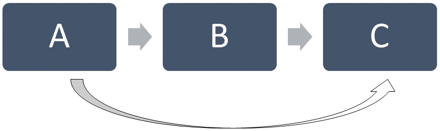
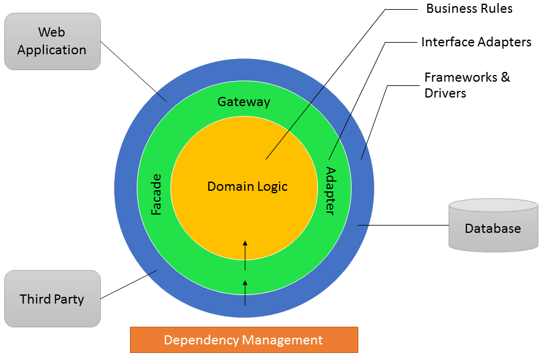
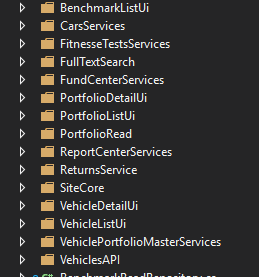
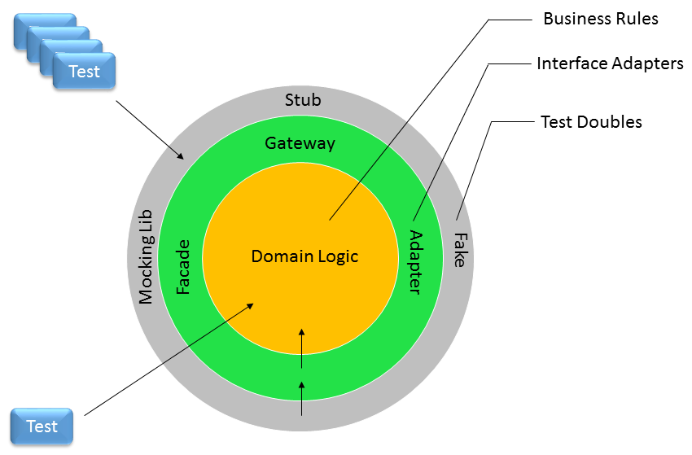

Clean Architecture
Definitions
Service Oriented Architecture
System
A collection of artifacts that make a deploy-able unit.
Architectural Style
a coarse grained pattern that provides an abstract framework for a family of systems
-- MicrosoftN-Tier Applications
Good Things
- Layers Work
- Simple
Bad Things
Transitive Dependency
The Bad Things
We can do better.
Dependency Inversion Principle (DIP)
Clean Architecture
Improved Architecture
- Minimizes the effect of NON-Business Changes
- Decouples from User Interface Frameworks
- Decouples the use of databases, 3rd party applications, 3rd party libraries
- Improved support for Unit Testing
Key Concept
BUSINESS RULES => Central Abstraction
NOT the database
Clean Architecture
Business Rules Core Shall...
- have no dependencies
- be organized by business rules / uses cases
- contain 80% of system code
- make a good use of OOP
Organized by Business Rules
Domain Logic Patterns

Dependency Management
Clean Architecture
Testable Architecture
Down Side
Adds a Learning Curve
When to Use
- Good Replacement for N-Tier: MOST of the Time
- Not good when your code is coupled to 3rd party by definition
Switching to Clean Architecture
Two Options
- Long Term Refactoring Strategy with Tests
- Rewrite